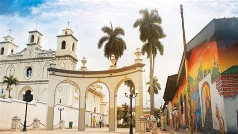
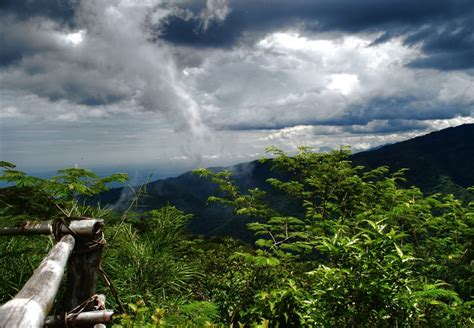
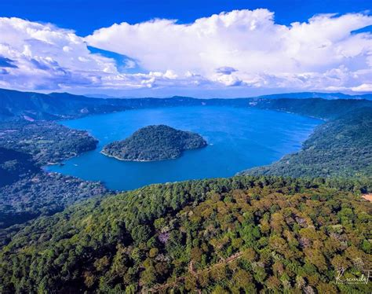

Información
Ahuachapán es un departamento ubicado en el occidente de El Salvador. Es conocido por su clima templado y su rica biodiversidad, además de ser una región agrícola clave para la producción de café, caña de azúcar y vegetales.
Datos Históricos
Ahuachapán fue fundado oficialmente en 1824 y fue un importante centro de cultivo de café durante el auge de esta industria en el país. En tiempos de la colonia, fue una de las zonas más productivas y pobladas del occidente de El Salvador.

Lista de Municipios
- Ahuachapán (cabecera)
- Apaneca
- Ataco
- Jujutla
- San Lorenzo
- San Sebastián Salitrillo
- Turín
Centros Turísticos
Ahuachapán es famoso por su parque nacional El Imposible, que es uno de los principales atractivos ecoturísticos del país. Además, Ataco y Apaneca son conocidos por sus pueblos pintorescos y la producción de café de alta calidad.
Lagos
El Lago de Coatepeque se encuentra cerca de Ahuachapán, siendo uno de los destinos turísticos más visitados de la región, ideal para practicar deportes acuáticos y disfrutar de su belleza natural.
Ríos
El río Lempa atraviesa parte del departamento y es crucial para la agricultura y la producción hidroeléctrica en la región.

Volcanes
El volcán de Izalco y otros cráteres cercanos a Ahuachapán son conocidos por sus paisajes impresionantes y rutas de senderismo. Estos volcanes son un atractivo turístico natural para los aventureros.

Personajes Célebres
De Ahuachapán provienen figuras como el escritor y poeta Salarrué, quien fue un importante referente literario de El Salvador.